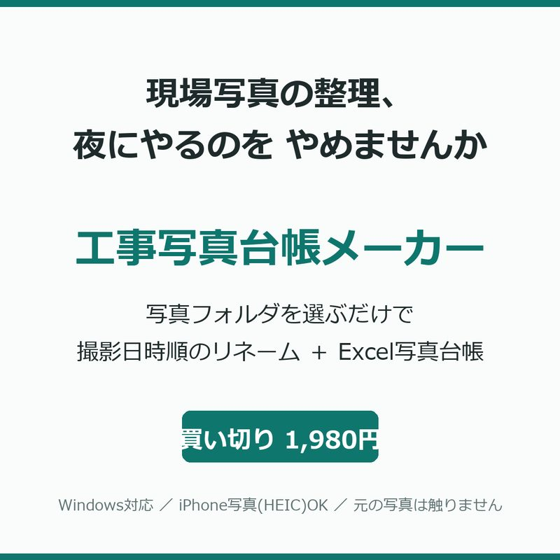

Internal Project
Windowsアプリ・販売中
工事写真台帳メーカー
現場写真を選ぶだけで、撮影日時順のリネームとExcel写真台帳を自動生成するWindowsアプリ。現場写真の整理と台帳作成に毎回かかっていた時間をなくすために作った。
詳しく見る →WORKS実績
実在するものだけを掲載しています。自社で企画から公開・運用まで行ったものには Internal Project、想定の架空サービスを使ったデザインサンプルには Concept Project のラベルを付けています。

Windowsアプリ・販売中
現場写真を選ぶだけで、撮影日時順のリネームとExcel写真台帳を自動生成するWindowsアプリ。現場写真の整理と台帳作成に毎回かかっていた時間をなくすために作った。
詳しく見る →Webサイト・公開中
いま見ているこのサイト自体が実績。黒曜石を基調にした配色設計から、Hero部分の粒子表現、レスポンシブ対応、自動検証まで一人で制作した。
詳しく見る →オンラインゲーム・公開中
最大10人参加のオンライン対戦サッカーゲーム。企画からサーバー権威型のゲームロジック、課金設計、公開までを一貫して実装し、現在も運用中。
詳しく見る →